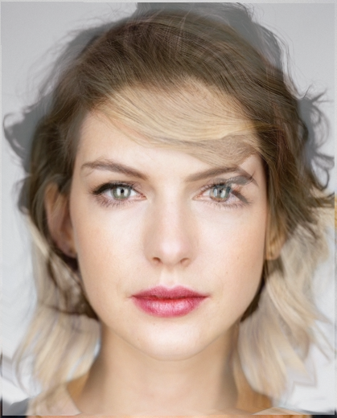
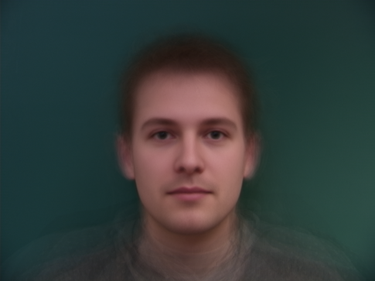
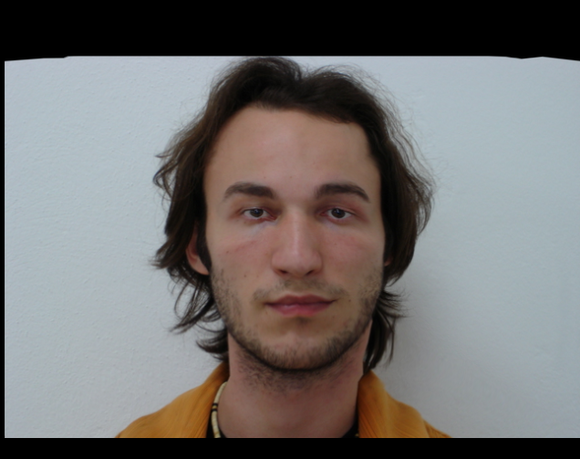
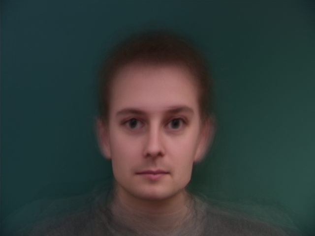
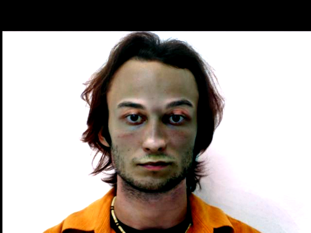
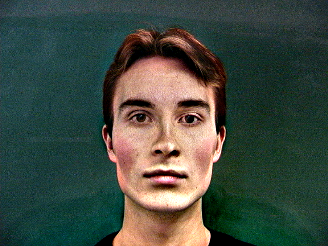

This project explores the way in which we can use facial data to examine key points about the population mean and how we can use that information to better understand organic geometry. I haven't used my own face below just out of personal preference.
The first part of this project is pretty straightforward. We use ginput to
define specific points on the face that we will use as keypoints later. These key-points are then
dumped into a json file for safekeeping. We're going to want to compute the average face between
our source and target images for which we just tracked keypoints, which we will describe in detail below.
To compute the midway face, we can simply first average the keypoints between our source and target images. Assume that we've already loaded the keypoints from the json files we saved earlier. Essentially at this point, we've averaged the shape vector of the faces, but not the color vector. Without loss of generality, we'll show a concrete example of retrieving the color vector for the source image. First, we generate the Delaunay triangulation of the average shape, and for each pair of corresponding triangles in the average shape, and the source image, we can use a system of linear equations to determine the affine transformation matrix. For each point in each triangle in the average shape, we can thus inverse warp that point to the source triangle, and sample its color, basically texture mapping the average triangulation based on the source triangulation. We do the exact same process for the target triangle (compute affine transformation matrix, texture map the average shape triangles based on corresponding inverse warped points in the target triangle). Since we want to average the faces, not add them, for each average shape triangle, we add 0.5 times the source mapped color, and 0.5 times the target mapped color to get the average color between these two faces! Take a look at the visual appearance of the midway face below, where the source image is Taylor Swift, and the target image is Anne Hathaway.
|
|

|
|
It's interesting to note that when we took the average of the shape and color vectors, we equally weighted
the source and the target image, in other words, the proportion of the source and target image in both the shape
and color vectors was the same. If we were to change this proportional weighting, we would see a higher proportion
of Taylor Swift or Anne Hathaway respectively. In other words, we can freely linearly interpolate between the source and target
images for both the shape and color vectors. If we do this over time, essentially we can generate an animation that
morphs between the source and target image (hence the title: morph sequence). We'll constantly increment
the proportion for both the shape and color lerp on a per-frame basis. The value of this delta will simply
be 1 / (FPS - 1). You can see the morph sequence below.
Of course averages pertain to more than just 1 source and 1 target image. Any number of images can contribute
to a population average, and the process for computing the population average is nearly identical to the one described
above. The only difference is in the weight in combination. Remember when we averaged 2 images, the proportion we used
to combine the source and target images for both the shape and color vectors was 1/2. Naturally, in
a population with n faces, each face will contribute proportionately 1/n to both the
color and shape vectors instead. Take a look at the average face of the following
Danish study.
|

|
We can also take a look at some morph sequences which swap individual faces to the average Danish face:
Finally, we can see what happens if we morph a face from a similar study from Brazil to the average Danish face shape, and similarly if we try to morph the average Danish face shape to the face shape of the researcher in the Brazil study.
|

|

|
Given we now have average population faces, we can think about, and extrapolate upon the deltas that exist between any given face and the average face for the population. In other words, for some face, we can compute the delta between the given face and the average population face, and extrapolate from the given face by adding some constant multiple of the delta. This works much better for images that were used to generate the mean, since usually these images have facial shapes that more closely align with the mean face, and the background colors match. Different backgrounds can cause some discoloration, which we can see below. The example on the left comes from a caricature based on a Brazilian male in the research group and the average Danish male face which we computed, while the image on the right comes from a caricature based on a Danish researcher we saw earlier, and the average Danish male face.
|

|

|
To demonstrate a more comprehensive example of data driven morphing, we can generate a small music video morphing between characters from the show Dragon Ball Z. We've applied the same exact technique here as we did when morphing between Taylor Swift and Anne Hathaway, except we've chained multiple morphs together.